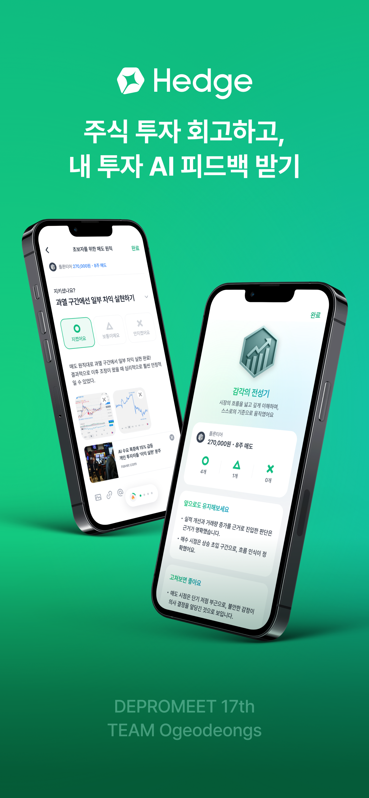
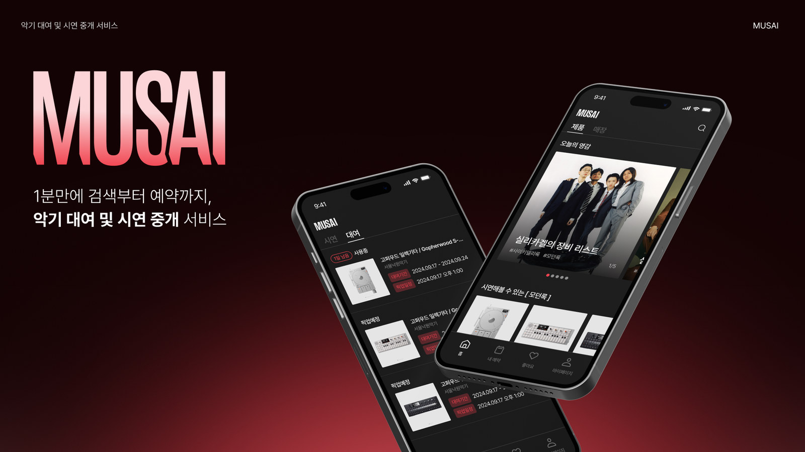
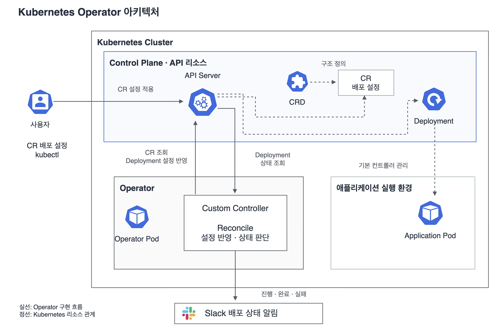
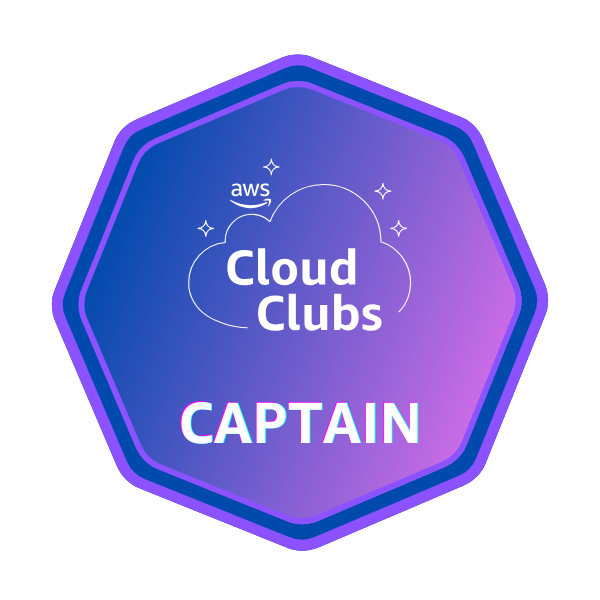
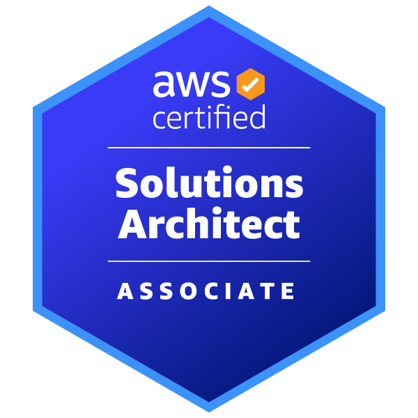

Argo CD Agent
2025 오픈소스 컨트리뷰션 아카데미 · 한국IT비즈니스진흥협회장상 수상
쿠버네티스 리소스 조회를 로컬 캐시로 개선
쿠버네티스 배포 관리를 지원하는 Argo CD Agent에서, 애플리케이션 정보를 조회할 때마다 API 서버를 호출하는 비효율을 발견했습니다. 일반 조회에는 기존 로컬 메모리 캐시를 활용하도록 변경해 API 서버의 처리 부담을 줄였습니다.
과정과 결과 보기Cloud Infrastructure · Automation
클라우드 인프라를 구축하고,
운영을 자동화합니다.
백엔드 개발 경험을 바탕으로 IT 인프라 환경을 구축하고, 클라우드에서 서비스 배포와 운영을 개선하는 엔지니어입니다. AWS와 쿠버네티스 환경에서 서비스를 배포하고 운영하며, 애플리케이션의 동작을 이해한 상태에서 인프라 문제를 해결합니다.
쿠버네티스 오픈소스에 기여해 리소스 조회 성능을 개선했고, Operator를 개발해 배포 상태 점검을 자동화했습니다. 사람이 같은 작업을 반복하지 않아도 되는 운영 환경을 만드는 데 관심이 있습니다.
인턴십에서는 기업의 AX(AI Transformation)를 수행하는 과정에서, 고객이 AI 서비스에 필요한 데이터를 직접 관리할 수 있도록 웹 플랫폼과 내부 시스템을 연결했습니다. 새로운 기술을 도입하는 데서 그치지 않고, 고객이 실제 업무에서 지속적으로 활용할 수 있는 환경을 만드는 것을 지향합니다.
이화여자대학교 컴퓨터공학전공
Selected work
오픈소스 기여, AWS 인프라 구축, 고객 문제 해결
2025 오픈소스 컨트리뷰션 아카데미 · 한국IT비즈니스진흥협회장상 수상
쿠버네티스 리소스 조회를 로컬 캐시로 개선
쿠버네티스 배포 관리를 지원하는 Argo CD Agent에서, 애플리케이션 정보를 조회할 때마다 API 서버를 호출하는 비효율을 발견했습니다. 일반 조회에는 기존 로컬 메모리 캐시를 활용하도록 변경해 API 서버의 처리 부담을 줄였습니다.
과정과 결과 보기AWS 인프라와 블루그린 배포 환경 구축
제한된 자원에서 3-Tier 기반 AWS 인프라를 구축하고, EC2를 가용영역에 분산하며 DB를 프라이빗 서브넷에 배치했습니다. 블루그린 무중단 배포와 CI/CD 파이프라인으로 배포 시간을 30분에서 10분으로 단축했습니다.
과정과 결과 보기
30분 → 10분배포 시간
Forward Deployed Engineer (FDE)
고객이 직접 데이터를 관리하는 플랫폼 환경 구축
고객 데이터 갱신 흐름
More projects

AI / Backend project팀 프로젝트 · 12명
앱스토어 출시
개인 투자자가 매매 이후 판단 근거를 정리하기 어렵다는 문제에서 출발했습니다. 매매 기록과 시장 데이터를 기반으로 개인화된 투자 회고를 생성하는 AI 제품을 기획·개발했습니다.
자세히 보기
Backend project팀 프로젝트 · 8명
세아해암학술장학재단 커리어챌린지 장학금 300만 원
악기 상가를 직접 방문해 거래와 재고 관리 절차를 파악했습니다. 예약과 재고 차감을 하나의 트랜잭션으로 처리하고, 비관적 잠금으로 동시 예약을 제어했습니다.
자세히 보기
Infrastructure project배포할 때마다 수동으로 확인하던 애플리케이션 상태 점검을 Operator로 구현했습니다. 서비스 준비 상태를 확인해 알리고, Loki로 관련 로그를 조회하도록 연결했습니다.
자세히 보기Research
이화여자대학교 AI컴퓨팅 플랫폼 연구실 · 학부연구생
Developer activities

배지 확인 ↗Education
Certifications

배지 확인 ↗Awards